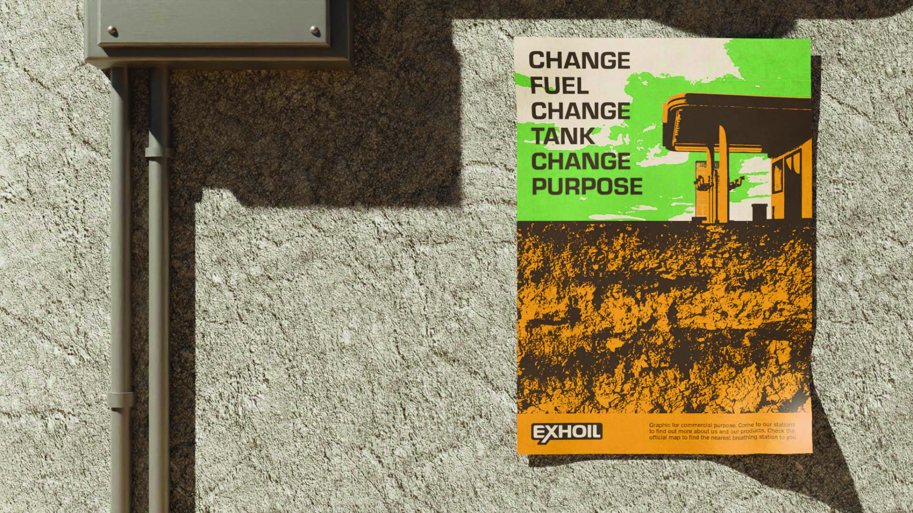
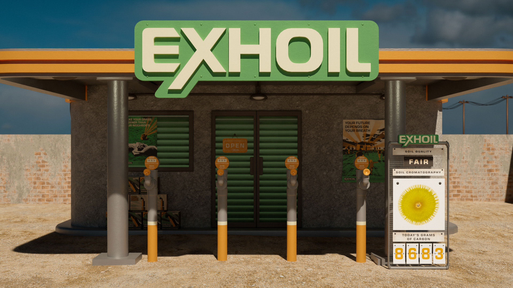
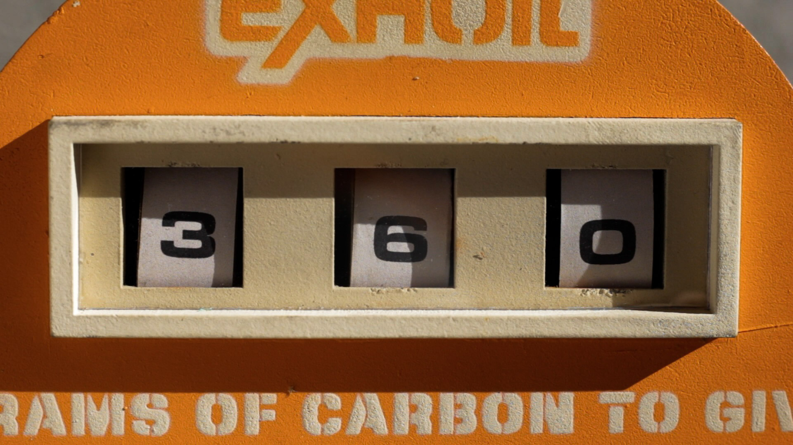
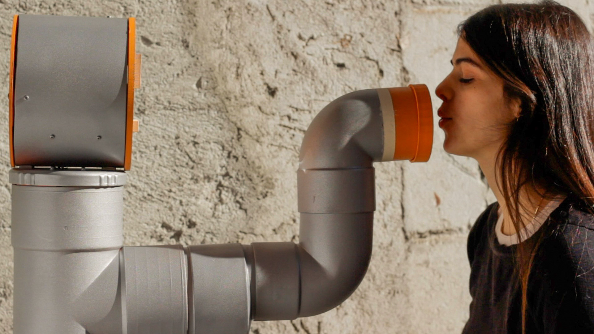
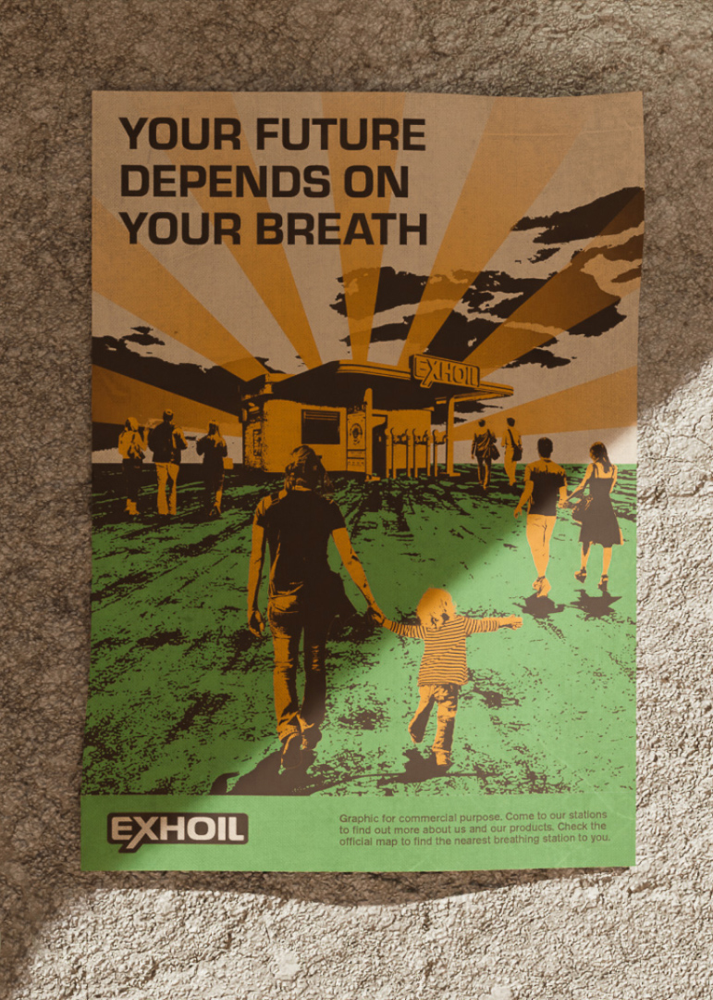
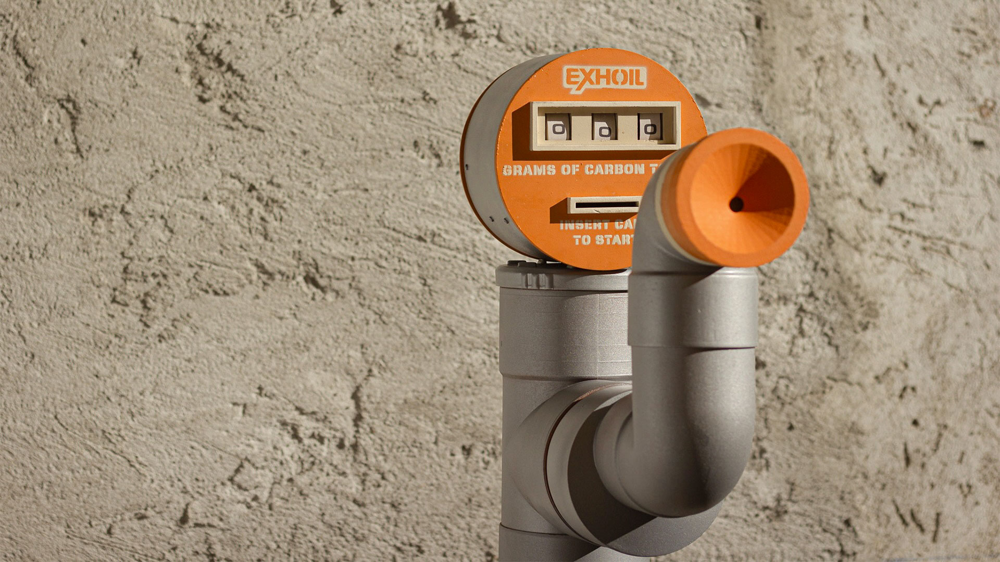
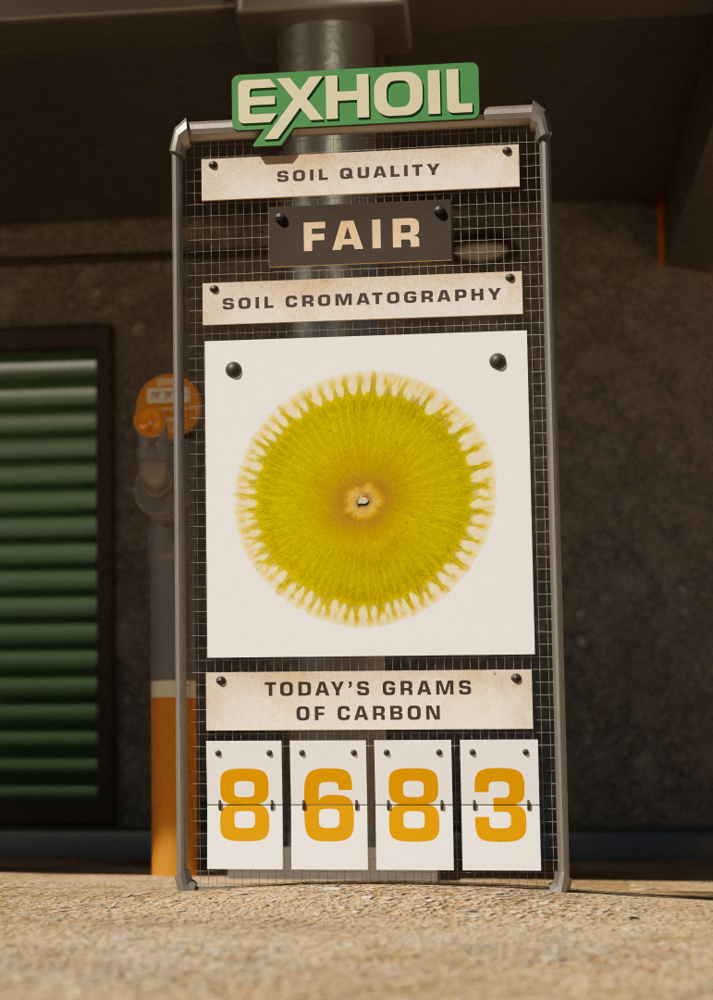

Unplug
UX and UI design
Branding
Branding
2022
Brief
The objective of this project was to start with a natural element and reflect on how it is influenced by the man-made climate crisis.
By imagining a future scenario, we considered how the relationship between humans and the natural element
that has suffered the consequences of the climate crisis will change. From this starting point,
the goal was to create a product and brand that do not currently exist, but will be necessary due to future problems.
This project is based on the element of soil.



Concept
The soil is the foundation and support of everything
on earth: a surface that breathes to stay alive,
by collecting and releasing carbon, preserving
the balance of the entire ecosystem. Factors such
as urbanization, deforestation and intensive farming
have begun to suffocate the soil, preventing it from
absorbing carbon. Eventually, in 2050, the most feared
scenario takes place: the death of the soil is officially
declared, it is now completely barren, no longer able
to give birth to life, at least on its own.


Exhoil
The Exhoil oil company, which has always taken
resources from the soil, decides to act by stopping
taking and starting to give. At the new Exhoil stations,
gasoline pumps are replaced by soil-breathing
columns, which convert carbon dioxide from human
breath into carbon that nourishes the soil, thus
generating artificial respiration in which mankind is
regarded as resource.



Team
Clara Di Bella